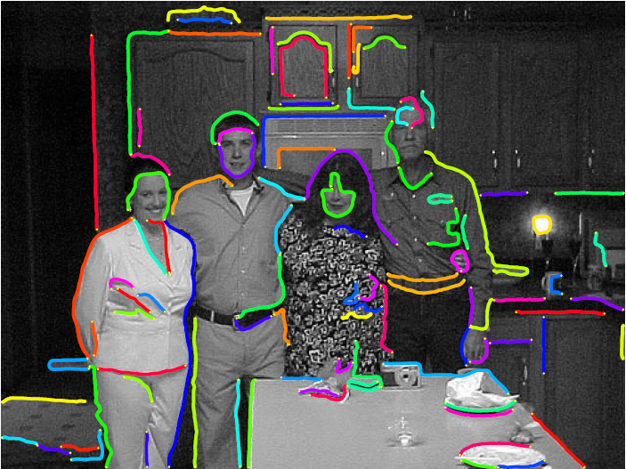
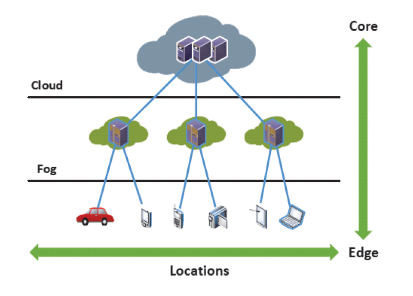
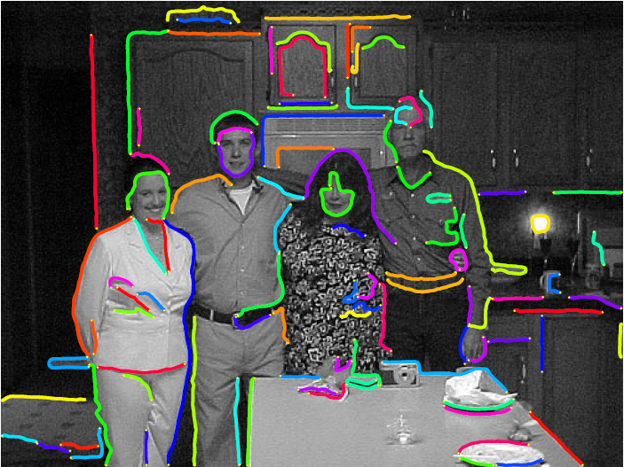
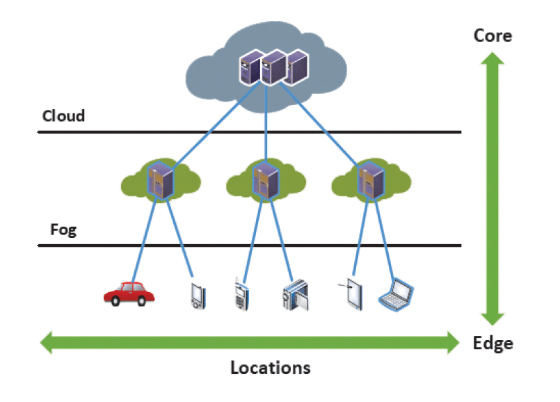

A Multi-Stage Method of Contour Extraction.

Projects in 3D Image lab.

Quantifying Computation Capacity of Vehicular Fog Computing System.
I am an undergraduate majoring in Electronic Engineering in Tsinghua University since 2013. I am currently affiliated to 3D Image lab, under the guidance of Prof. Huimin Ma. In summer 2016, I spent six wonderful weeks working as an intern in LEMS Lab, Brown University, working with Prof. Benjamin Kimia. During my undergraduate study in Tsinghua University, I got an overall GPA of 86/100, ranking 32 among 196 students. I was active in research actvities having been recruited by Tsinghua University's Student Research Training program and CSJ program. I have done several research related to computer vision and data science, and I now have three publications under revision. My research interest spans a wide range in the field of computer vision, especially in topics related to object detection, scene labelling, face analysis, and image analysis method for the above topics, such as contour extration, image segmentation and motion detection. My dream is to make AI devices intepret visial world as accurately and efficiently as human beings.
Research projects

A Multi-Stage Method of Contour Extraction.
Projects in 3D Image lab.

Quantifying Computation Capacity of Vehicular Fog Computing System.